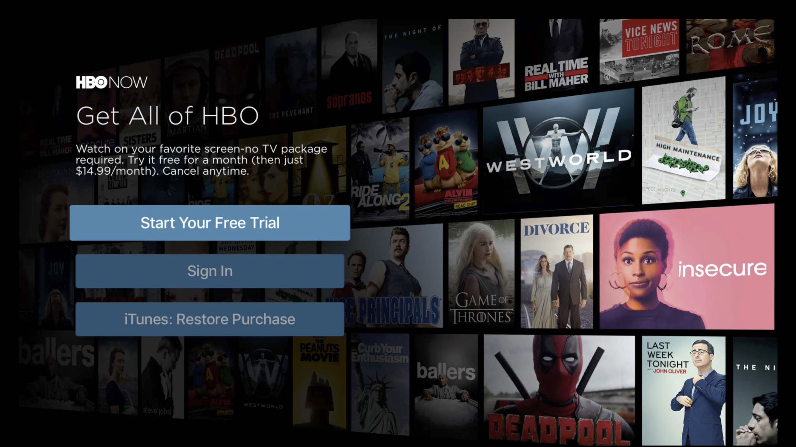
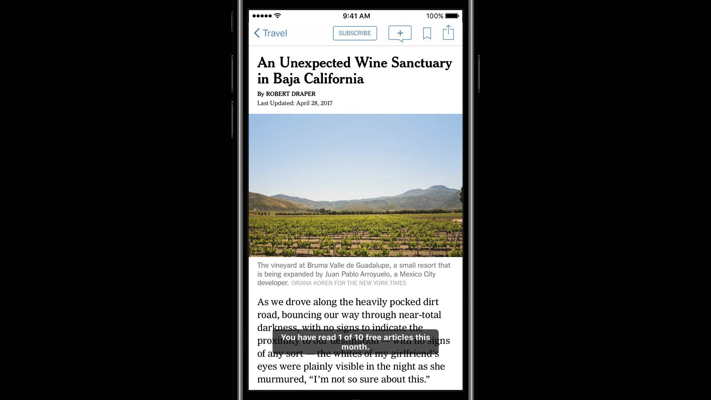

在订阅时提供一个轻松简单、透明易懂、吸引人的用户体验将会更好地传达订阅的价值、优化订阅的流程，更加容易获取新的订阅者。
Effortless 轻松
Be Visible：要让用户知道你的 app 里存在订阅功能，不要让用户到处寻找如何订阅/注册：
方法一：在 app 的界面中一直显示一个「订阅」按钮，例如「The New York Times」app 中，每篇文章的导航栏上都有一个「订阅」按钮；

Note：Subscription ≠ Ad、Subscription ≠ Notification，不要把订阅以弹框或通知的形式呈现；
方法二：当用户对一部分内容或者功能表现出感兴趣时，展示订阅功能，例如「Her」app 中，当你在浏览每个人的介绍时，刚好错过了一个你感兴趣的人，当你想要回退时，app 会告诉你这是一个「订阅」后可使用的功能。并且在展示订阅的界面上有着漂亮的动画。

确保在「设置」或者「帐户」中有一个地方有订阅的入口，因为当一个用户想刻意寻找订阅时自然会想到这些位置。

Remove Friction：减少麻烦，不要在注册/订阅过程中要求用户填写太多信息，不要有过多的步骤，不要让用户花过长的时间。下面是美国三大视频流媒体 app 一个月的数据，看下要求点击次数与转换率的关系。要求点击 9 次时转化率只有 7% 了。

- Less is more. 更少的点击，更少的麻烦就会有更高的转化率和更多的订阅者。先把焦点放在让用户先完成注册上。像爱好、个人介绍等细节可以放在注册之后再让用户补充。
Transparent 透明
Provide clear terms：提供清晰的订阅条款，让用户明白他们订阅了什么。看到订阅的界面，用户应该能快速了解订阅的是什么和怎样订阅。
当提供订阅时，通常包括：简洁的价值主张、对订阅的号召、已订阅用户可登录、换了新设备的用户可恢复购买、提供不同层级的订阅选项（最多三到四种为佳）。尽可能的让界面保持简洁。
Engaging 吸引
- Engage through experience：在订阅前，让用户能够体验你的 app 和 app 的内容。在当今，购买前能够体验和尝试是怎样做出购买决定的重要影响因素，如试衣服、看房、试驾等。对 app 的订阅是同样的道理。
吸引用户订阅有多种方法，决定用哪种方法时想想：用户当前的使用体验，你 app 里的内容类型，添加订阅后对于用户体验的影响。
Free trial：适用于人们已经熟悉的品牌，人们想要在订阅前了解到底有什么内容。如 「HBO NOW」app。

Premium feature：App 的主体免费，但一部分高级功能作为订阅选项。例如「Sleep Cycle」app，将「趋势」功能作为订阅选项，模糊背景的形式作为一个预览。
Sample content：提供一部分示例内容。如「The New York Times」app，只允许未订阅的用户浏览十篇文章，这样可以让用户自己寻找和决定自己感兴趣的内容，从而决定是否要去订阅。

参考链接
如果你觉得这篇文章对你有所帮助，欢迎请我喝杯咖啡，感谢你的支持😁